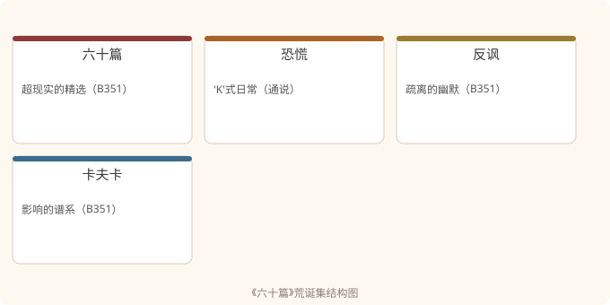

六十篇
一、基本信息
| 作者 | 迪诺·布扎蒂 |
|---|---|
| 成书/出版 | 1958年（Britannica B351：Sessanta racconti (1958)——'Sixty Tales' collection） Dino Buzzati — Encyclopaedia Britannica（百科全书） |
| 国别/地区 | 意大利 |
| 时代 | 现当代 · 20世纪50年代末 |
| 体裁 | 短篇小说集 |
| 语言 | 意大利语 |

《六十篇》荒诞集结构图（主题·结构图）
二、创作背景
Britannica（B351）：Sessanta racconti (1958)——'Sixty Tales' collection。
Britannica（B351）：布扎蒂——卡夫卡式超现实、象征与荒诞——'uniquely devastating skill and detached sense of irony and humor'。
题材（通说待核）：六十个短篇的荒诞集——电梯、坠落、怪物与时间。
三、内容脉络
（通说待核——B351未载篇目）超现实短篇的精选集。
（通说待核）'K'式恐慌与反讽的并置。
四、主要人物表
| 人物 | 身份 | 说明 |
|---|---|---|
| 众篇人物 | —— | （通说待核） |
五、主题与艺术特点
- 卡夫卡式的超现实（B351：Kafkaesque surrealism）。
- 日常的恐怖化（通说待核）。
- 疏离的反讽（B351：detached sense of irony）。
六、影响与评论
- Britannica：'Sixty Tales' collection（B351）。
Dino Buzzati — Encyclopaedia Britannica（百科全书） - Britannica：'detached sense of irony and humor'（B351）。
Dino Buzzati — Encyclopaedia Britannica（百科全书）
七、阅读建议
难点
- 超现实短篇的逻辑。
- 1950年代意大利都市背景。
- 《六十篇》中译名（《短篇小说六十篇》两说——通说待核）。
- 意大利文原版。
布扎蒂短篇首选；与《鞑靼人沙漠》对读。
八、待核实
- 篇目核对（B351未载）。
- 1958年出版（Mondadori说）待核。
- '六十篇'实数核对。